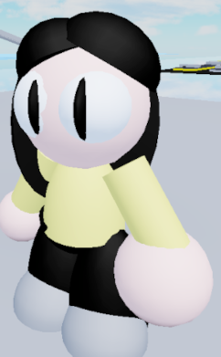

Raibaru/Yokai
Orange?
Hp:750
Stamina:120
Speed:andar:7/correr:13
dano:14
Ability's
Por Traz Das Cenas
Ela conseguir invocar portais que ela consegue selecionar o portal
limite 6
Animação Velha/Passiva
Quando ela começa a chega perto de você a tela começa a ter bugs
Question?
Mande uma questão?
Transformação
Ser transformar no yokai e durar 45 ou ser quiser volta ao normal